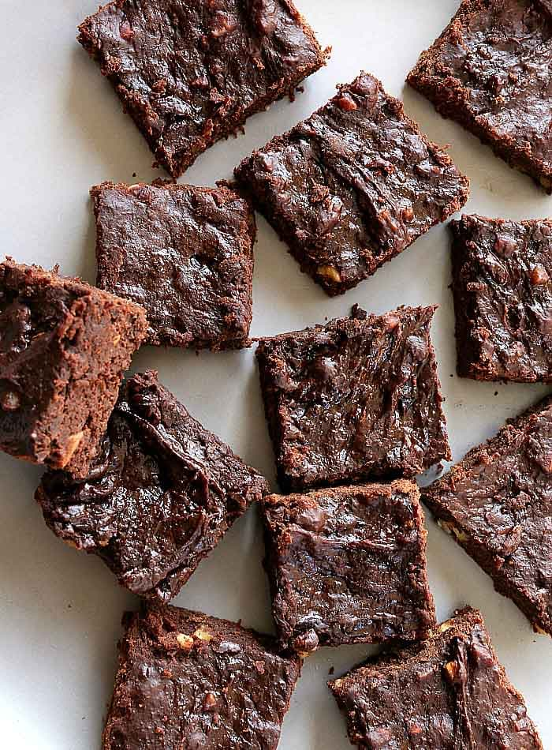

Vegan Brownie

Easy and Delicious Raw Brownies in 20 minutes
This recipie is for everyone that has a sweet tooth but is trying to be healthy about it! I promise that with this one you can indulge guilt free!!!
Ingredients:
- 2 Dl Shredded Coconut
- 8 Dl Cacao Powder
- 30 Fresh Dates without stone
- Pinch of Salt
- 4 Dl Coconut Cream
- 3 Tbs Coconut Sugar
- 3 Tbs Melted Coconut Oil
- 4 Tbs Maple Syrup
- 1 Tbs Coffee
Preparation:
- Place 2 Dl Shredded Coconut, 2 Dl cacao Powder, 20 Fresh Dates and a pinch of salt in the food processor and mix until well combined.
- Put the baking paper in the form of your choice and put the mixture in.
- Clean the food processor and add to it 4 Dl Coconut Cream, 6 Dl Cacao Powder, 3 Tbs Melted Coconut Oil, 4 Tbs Maple Syrup, 10 Fresh Dates, 1 Tbs Coffee and a pinch of Salt.
- Mix until smooth in texture.
- Pour over the mix you have already placed in the form.
- Put it in the freezer until firm.
ENJOY!
Return to the main page